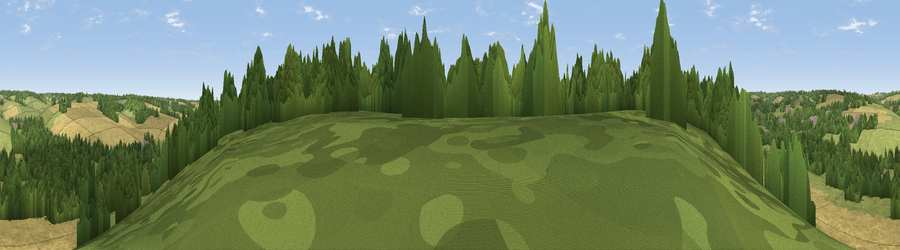

Viewpoint near Ramsbury
#39179 in England · top 83% of its area beats it · near RamsburyThe view, rendered

A 360° render of this exact spot computed from the terrain model, tree cover and land cover — summer colours, afternoon light, calibrated against photographs of famous viewpoints. Real trees, hedges and buildings will differ in detail.
The panorama
Grey silhouette: terrain skyline in each direction (720 bearings, Earth curvature and refraction included). Dashed green: skyline with trees (+15 m) and buildings (+8 m) as obstacles. Blue strip: how far the ground is visible on each bearing.
Where the view opens
Wedge length = distance to the farthest visible ground on that bearing (vegetation-aware). Rings at 10, 25 and 50 km.
What fills the view
37% woodland · 31% grassland · 30% cropland · 1% built-up
Angular shares of the visible panorama (visual magnitude), not map area. Landscape diversity 0.50 (0–1 Shannon).
Key numbers
More beautiful places nearby
The staircase of upgrades: each row has a higher view potential than everything closer. Driving times are estimates from straight-line distance, calibrated against real road routing — check an actual route before setting out.
| Place | Direction | Drive | Score |
|---|---|---|---|
| Viewpoint near Ramsbury | NNE · 2 km | ~4 min | 35.5 |
| Viewpoint near Ramsbury | W · 2 km | ~5 min | 35.9 |
| Viewpoint near Ramsbury | WSW · 4 km | ~9 min | 39.7 |
| Viewpoint near Mildenhall | WNW · 5 km | ~11 min | 40.6 |
| Viewpoint near Mildenhall | WNW · 6 km | ~13 min | 41.6 |
| Viewpoint near Ogbourne St George | WNW · 8 km | ~16 min | 45.9 |
| Peaks Downs | NNW · 8 km | ~17 min | 48.4 |
| Viewpoint near Baydon | N · 9 km | ~17 min | 51.9 |
51.43570, -1.58887 · source: screening · position refined by local search. Computed location — check access rights before visiting.